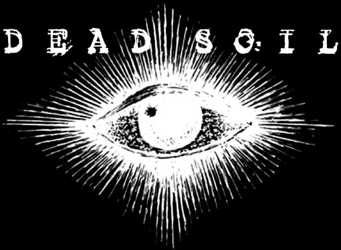

Lyrics
Endless
Endless cycle of destructionLords rule our own demise
Rotten apathetic cowards
No hope. No future.
Depraved, starved souls
Better off dead
Remorse
A curse sweeps the land,Brought upon ourselves
Our ways never end
Too blind to see
Regret, Remorse, Repent, Repeat
One by one - stolen
One by one - forgotten
One by one - unseen
It seems worthless
Nobody cares
Condemned to die
A curse sweeps the land,
Brought upon ourselves
It’s over. We’ve done it. Please forgive me.
I’m sorry, for all the pain, done to you.
I’m sorry. I’m sorry, for all the pain.
Raped. Butchered. Enslaved. Left to rot
This World Has Moved On
Barren waste landThis world has moved on
Pray for forgiveness
Pointless redemption
Fallen through the cracks
They took over
All hope is lost